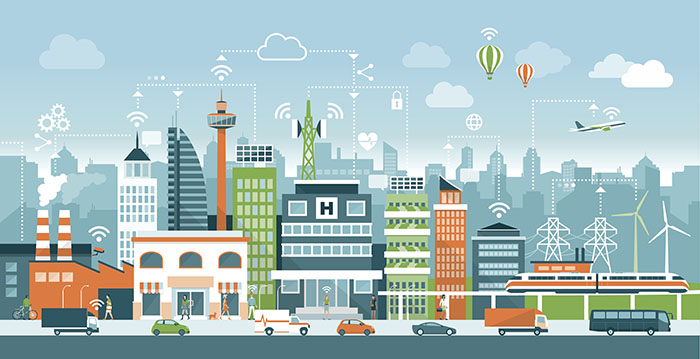

Smart City is a framework, predominantly composed of Information and Communication Technologies (ICT), to develop, deploy, and promote sustainable development practices to address growing urbanization challenges. A big part of this ICT framework is essentially an intelligent network of connected objects and machines that transmit data using wireless technology and the cloud.
Cloud-based IoT applications receive, analyze, and manage data in real-time to help municipalities, enterprises, and citizens make better decisions that improve quality of life. Citizens engage with smart city ecosystems in a variety of ways using smartphones and mobile devices, as well as connected cars and homes. Pairing devices and data with a city’s physical infrastructure and services can cut costs and improve sustainability. Communities can improve energy distribution, streamline trash collection, decrease traffic congestion, and even improve air quality with help from the IoT.